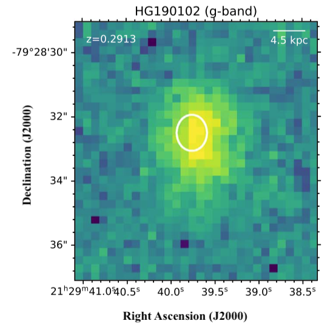

FRB 190102
Image from Bhandari et al., 2020, ApJL, 895, 37
Summary
- Detected by: ASKAP-ICS
- FRB coordinates (RA, Dec): 21:29:39.72 -79:28:32.2 (J2000)
- Host coordinates (RA, Dec): 21:29:39.76 -79:28:32.5 (J2000)
- Redshift: 0.2912
- Observed DM: 364.5 pc cm-3
- Repeating: No
- References: 2020Natur.581..391M;
2020ApJ...895L..37B;
2020arXiv200513162D